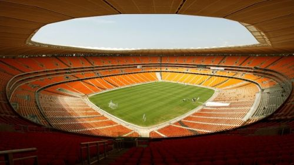
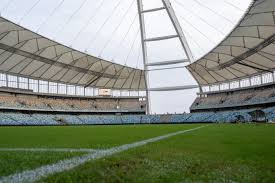
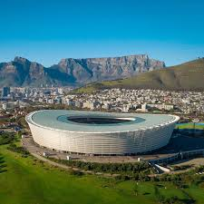

fue un torneo internacional de fútbol donde participaron 32 selecciones de todo el mundo. Se realizó en Sudáfrica del 11 de junio al 11 de julio de 2010, siendo el primer Mundial organizado en África. El torneo se dividió en dos fases: una fase de grupos y una fase eliminatoria. En total se jugaron 64 partidos entre las selecciones clasificadas. El campeón fue la Selección de fútbol de España, que ganó su primer título mundial al derrotar 1-0 a la Selección de fútbol de Países Bajos en la final. El único gol del partido lo anotó Andrés Iniesta en tiempo extra. Entre los jugadores más destacados estuvieron Diego Forlán, quien fue elegido el mejor jugador del torneo; Thomas Müller, máximo goleador; y Iker Casillas, reconocido como mejor portero.



Diego Forlán
El mundial de sudafrica 2010 fue un historico al ser el primero en el suelo africano, caracterizado por el ensordecedor zumbido de las vuvuzelas, Durante el campeonato, se destaco mucho la musica, Los estadios estaban llenos de alegria y de personas usando ropa tipica, banderas y pinturas representativas de sus paises.


España, dirigida por Vicente del Bosque, ganó su primer Mundial con su estilo de juego tiki-taka.
España 1-0 Holanda (11 de julio, Johannesburgo). Un partido intenso y físico resuelto por Iniesta al minuto 116.
Sudáfrica, marcando un hito al ser el primer mundial en África.
El polémico Jabulani.
Diego Forlán (Uruguay) fue nombrado el mejor jugador del torneo.
Thomas Müller (Alemania) con 5 goles (empate con Villa, Sneijder y Forlán, pero más asistencias)
La Copa Mundial de la FIFA Sudáfrica 2010 fue histórica, marcando el primer torneo en suelo africano, con España consagrándose campeona por primera vez tras vencer 1-0 a Holanda en la prórroga con gol de Andrés Iniesta. El evento, recordado por el sonido de las vuvuzelas y el "Waka Waka", coronó el estilo "tiki-taka" español y tuvo al Pulpo Paul como figura mediática.
.jpg)